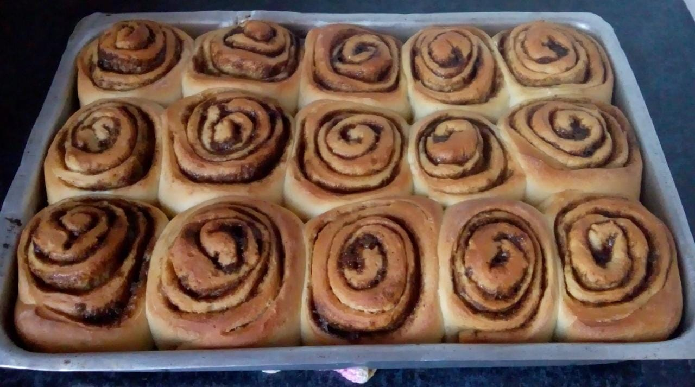
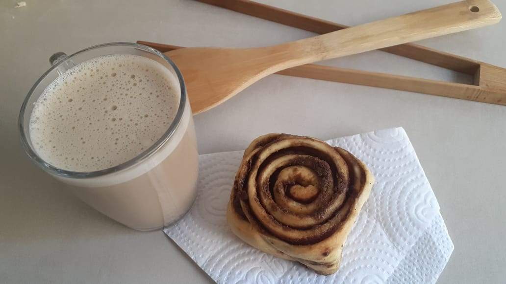

Acesso Rápido
Descrição
O cinnamon roll surgiu na Suécia do início do século XX. Por lá, ele leva o nome de “kanelbulle”, em tradução literal “rosca de canela”. O doce tornou-se um ícone da gastronomia do país nórdico. Dessa forma, ele faz parte da tradição do café sueco, mais conhecido como “fika”.
Ingredientes:
Massa
- 7gr de fermento biológico seco
- 2 colheres sopa de água
- 1 colher chá de açúcar
- 1 colher chá de sal
- 1 xícara de leite integral
- 2 colheres sopa de creme de leite
- 1 ovo
- 50gr de açúcar
- 438gr de farinha de trigo tipo 1
Recheio:
- 4 colheres sopa de margarina amolecida
- 150gr de açúcar mascavo
- 2 colheres sopa de canela em pó
- 2 colheres de farinha de trigo
Modo de Preparo:
Massa
- Numa xicara pequena colocar as 2 colheres de agua, a colher chá de açúcar e o fermento. Misturar e deixar descançar por 10min.
- Em uma bacia pequena adicione todos os ingredientes liquidos e misture, junte o preparo do fermento e misture novamente.
- Em outra bacia grande adicione todos os ingredientes secos e misture, junte os liquidos e misture até desgrudar do recipiente.
- Em uma superficie lisa coloque a massa e vai amassando até desgrudar das maõs (aproximadamente 15 minutos de amassado).
- Coloque a massa numa bacia e cobrir com um pano. Deixe a massa descansar por 1 hora num lugar abafado.
Recheio:
- Em um recipiente pequeno coloque o açúcar, a canela e as duas colheres de farinha, misture e reserve
- Abra a massa numa superficie plana com ajuda de um rolo.
- Passe a margarina amolecida por toda a superficie da massa. Polvilhe a mistura de açúcar, canela e farinha e enrole.
- Corte a massa em pedaços de mais ou menos 3 dedos. Coloque os rolinhos numa assadeira forrada com papel manteiga e deixe um espaço entre eles. Cobra com um pano de prato e deixe descansar por 30 minutos.
- Asse em forno preaquecido a 180 graus Celsius por 20 minutos.

Bom Apetite!